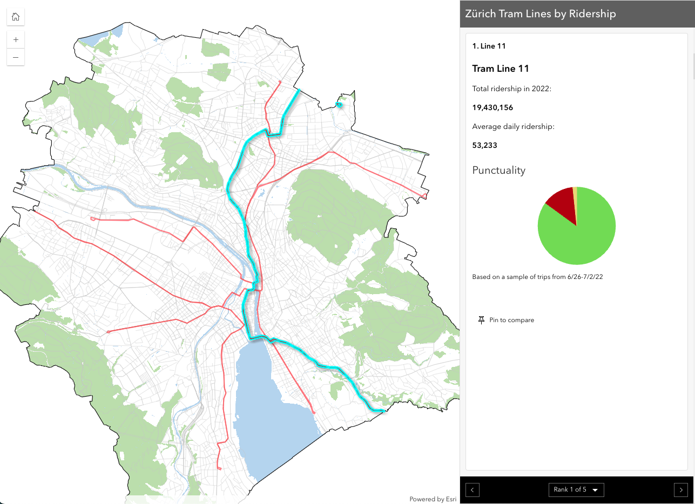

Here's a preview of the app...
Zürich Transit Insights: Data Analysis and Geovisualization
Quick Links: App, Poster PDFs, GitHub Repo
-
This project is sort of a part three to my overall exploration of Zürich, Switzerland. After participating in a UConn Experiential Global Learning course over the summer, my fascination with the city was ignited. Spending three weeks immersed in the Sustainable Cities course allowed me to delve into Zürich's renowned sustainability initiatives. My final project for the course, a short documentary entitled "Sustaining Minds, Sustaining Cities: Mental Health in Zürich" explores the impact of sustainability practices on the mental health of city residents. Watch it here!
I continued my exploration of Zürich's sustainability by making it the focus of my final project for my Fall 2023 Intermediate German course. Leveraging my experience creating StoryMaps, I crafted a visual narrative highlighting Zürich's distinctive sustainability practices. This project can be viewed here.